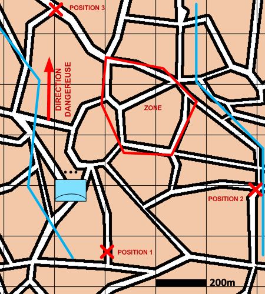

NIVEAU :Automate
ARME :ASA
MISSION :Surveiller
Objectif principal
- Surveiller (face à une menace 3D)
Modalités d'exécution
-
L'automate répartit ses subordonnés selon le mode de déploiement spécifié ou sur les positions de déploiement données ;
-
Sur ordre de conduite "Activer radar", les subordonnés activent leur radar ;
-
Les subordonnés reconnaissent les unités aériennes à portée de leurs radars ;
-
Tir sur riposte quand pris à partie par des unités aériennes.
Schéma de modélisation

Paramètres obligatoires
Fuseau : Zone de responsabilité.
Direction Dangereuse : Orientation privilégiée des capteurs.
Zone : Zone à surveiller.
Paramètres optionnels
Positions de déploiement
Mode deploiement: Double Rideau, Carré, Triangle, Nasse 4 sections, Nasse 3 sections ou Simple Rideau (N'est prit en compte si pas de position de deploiement renseignée et vaut 'en carré' par défaut)
Angle: entre 1 et 360 degrés (vaut 180 par défaut)
Lignes de début et fin de mission [LDM/LFM]